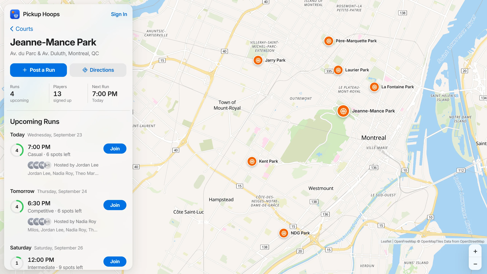

Selected court One of seven real parks 4 of 10 spots taken Guests can join in one tap- POST/auth/register201New account, returns a JWT
- POST/auth/login200Checks the bcrypt hash, returns a JWT
- GET/courts200Every court with its coordinates
- GET/runs200Upcoming runs, optionally for one court
- POST/runs201 422Host joins as the first player. Past start times are rejected.
- POST/runs/{id}/join200 409Conflict if the run is full or you're already in
- POST/runs/{id}/leave200 409Conflict if you're not in the run
- DELETE/runs/{id}204 403Only the host can cancel
Full-stack web app
Pickup Hoops
Find and join pickup basketball games at real courts around Montréal.
React · Vite · Leaflet · MapLibre · FastAPI · SQLAlchemy · PostgreSQL
View sourceIt starts from the map.
Seven real Montréal parks are seeded into the database with their coordinates and drawn on the map. Pick a court and it opens in the side panel, with its runs and who's playing.
See who's playing, then post a run or join one.
A run has a court, a start time, a skill level and a player limit. Anyone can look around without an account. Joining or posting asks you to sign in, or to continue as a guest in one tap. Passwords are hashed with bcrypt, and the API issues a JWT for the requests that need one.
The rules live in the API.
The FastAPI backend enforces them on every request, so no client can break them: runs must start in the future, full runs can't be joined, and only the host can cancel.
Four tables behind it.
Users, courts and runs, plus a join table that links players to the runs they've joined. SQLite while developing, PostgreSQL in production.